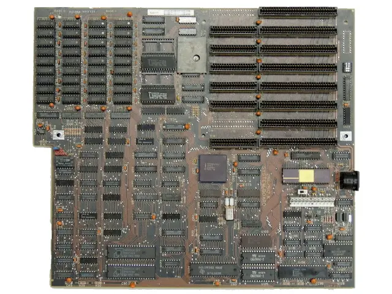
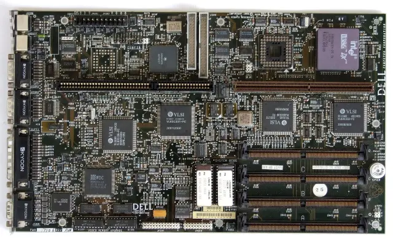
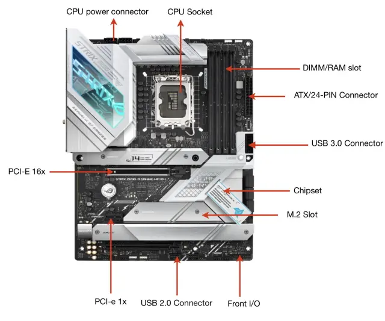
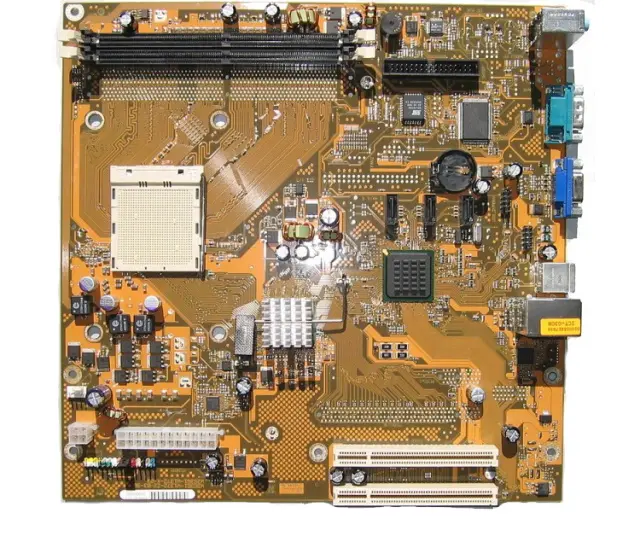
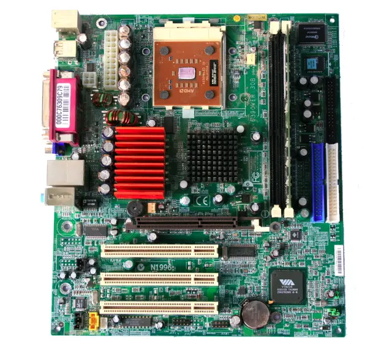
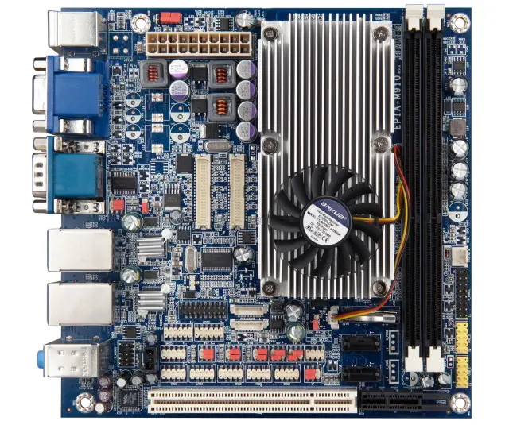
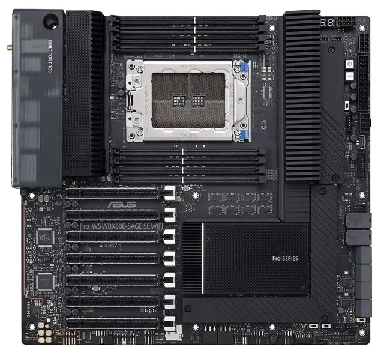
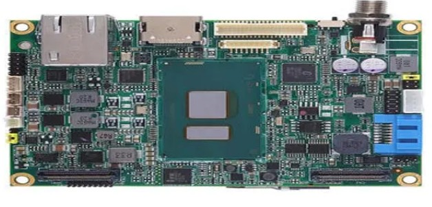

Portfolio#5 - Comparative Study on Different Types of Motherboards
What are Motherboards?
A motherboard is the primary circuit board connecting all the necessary pieces for your computer to operate as a system.(What Is a Motherboard?, 2023)
A motherboard is the main printed circuit board (PCB) in a computer. The motherboard is a computer's central communications backbone connectivity point, through which all components and external computer hardware connect. (Kirvan, 2022)
Essentially, the motherboard is what makes a functioning computer as it is what connects everything together and makes the computer a system. Without it, you just have separate useless electronic parts.
Discussion
Like humans, motherboards have also been evolving and upgrading over the years. Each new version offering better performance and functionality than the last. In this portfolio, we conduct a comparison on the different types of motherboards, both old and new. Through this portfolio, we will be able understand how tech companies have innovated and improved motherboard designs in order to cater to ever-changing preference and needs of users.
Motherboards serve as the backbone for computer systems. It is the main circuit board in a computer system as it connects all of the internal components, like the memory, processor, graphics card and other hardware (Lenovo, 2021). Which basically means that determine the functionality and overall performance of a computer. Over time, motherboards have evolved in terms of build, CPU and memory slots, chipsets, and etc.
Over time, we have had various types of motherboards such as: AT, Standard-ATX/ATX, BTX, Extended-ATX, LPX, Micro-ATX, Mini ITX, Mini-ATX, and Pico BTX. Each of these motherboards represents the eras and breakthroughs that motherboards have had over the years. They all vary in their sizes, slots, functionality, features, and etc. For example, older models like the AT and LPX motherboards were large, making them inefficient and impractical for modern computing needs. On the other hand, the Standard ATX, Extended-ATX, and Micro-ATX, are the standards right now due to their efficiency and viability. These types are balanced in every aspect, making them ideal choices for completing modern tasks. Meanwhile, the Mini-ITX and Pico-BTX are made for more compact and minimalist build in order to save space, while still having essential features. Despite being different and unique from one another, each type exists in order to meet the needs and preferences of users. May it be for high-performance tasks such as gaming or for simple day to day tasks. This wide variety of choices allows users to pick which one suits them most.
All in all, the different types of motherboards reflect their evolution over time in order to adapt to the growing demands of users. As time goes on, we will be able to see even more variations of these motherboards. This will not only enhance the performance of computers as a whole, but also showcase the innovation of man in the world of computing.
Motherboard Comparison
Form Factor
Build
CPU Slots
Memory Slots
Chipsets
BIOS
PCI Slots
SATA
Built-in Features
AT Motherboard
12" x 13.8"
1
4-8 (SIMM)
Early Intel/VIA/SiS discrete logic or chipset
Standard / Legacy
6 (ISA / PCI)
None (IDE/ATA)
Very few; required expansion cards for most functions (audio, video, network).
Standard-ATX / ATX Motherboard
12" x 9.6"
1
2-8 (DIMM, DDR4/DDR5)
Wide range of Intel/AMD modern chipsets
Modern (UEFI)
Up to 7 PCIe (x16/x8/x1)
4-8
Integrated audio, LAN, multiple USB ports, Wi-Fi (on many models).
BTX Motherboard
12.8" x 10.5"
1
2-4 (DDR2/DDR3)
Intel/AMD specialized chipsets
Modern (UEFI)
Up to 7 PCIe
4-8
The main feature was thermal design; otherwise similar to contemporary ATX.
Extended-ATX (E-ATX)
12" x 13"
1-2
4-8+ (DDR4/DDR5)
Server/workstation chipsets
Modern (UEFI)
Up to 8 PCIe (x16/x8)
6-8
Extra slots, built-in Wi-Fi, sound cards, and onboard troubleshooting features.
LPX Motherboard
9" x 13" (varies)
1
2-4 (SIMM)
Older Intel chipsets
Standard / Legacy
2-4 (via riser card)
0-2
Some integrated video and I/O to save space.
Micro-ATX
9.6" x 9.6"
1
2-4 (DIMM, DDR4/DDR5)
Intel/AMD modern chipsets
Modern (UEFI)
Up to 4 PCIe (x16/x1)
2-4
Similar features to ATX but in a more compact layout.
Mini-ITX
6.7" x 6.7"
1
2 (DDR4/DDR5 SO-DIMM)
Varies by generation
Modern (UEFI)
1 PCIe x16
2-4
Highly integrated: typically includes Wi-Fi, Bluetooth, LAN, and audio.
Mini-ATX
~11.2" x 8.2"
1
2-4 (DDR3/DDR4)
Wide range of Intel/AMD modern chipsets
Modern (UEFI)
2-3 PCIe
2-4
Basic integrated features for its time.
Pico BTX
8" x 10.5"
1
2 (DDR2/DDR3)
Intel specialized chipsets
Modern (UEFI)
1 PCIe x16
1-2
Integrated features based on its intended purpose (e.g., DVRs).
AT Motherboard

LPX Motherboard

ATX Motherboard

BTX Motherboard

Micro-ATX Motherboard

Mini-ITX Motherboard

E-ATX Motherboard

Pico-BTX Motherboard

References
ASUS Edge Up. (2025, February 9). Motherboard sizes in 2025: Pick the right size for your next PC. https://edgeup.asus.com/2025/motherboard-sizes-in-2025-pick-the-right-size-for-your-next-pc
Corsair. (n.d.). ATX vs MicroATX vs Mini-ITX: What’s the difference? https://www.corsair.com/us/en/explorer/diy-builder/cases/atx-vs-microatx-vs-mini-itx-whats-the-difference
Coursera. (2023, August 21). What Is a Motherboard? Coursera. https://www.coursera.org/articles/motherboard
DigitalClassWorld. (n.d.). Types of computer motherboard. https://www.digitalclassworld.com/blog/types-of-computer-motherboard
EDUCBA. (n.d.). Types of motherboard. https://www.educba.com/types-of-motherboard
GeeksforGeeks. (n.d.). Types of motherboards. https://www.geeksforgeeks.org/electronics-engineering/types-of-motherboards
Informatica. (2018, April 28). Types of motherboard: All that you need to know. https://informatica890646276.wordpress.com/2018/04/28/types-of-motherboard-all-that-you-need-to-know
Kirvan, P. (2022, June). What is motherboard? - Definition from WhatIs.com. WhatIs.com. https://www.techtarget.com/whatis/definition/motherboard
Lenovo. (2021). Motherboard: What does a motherboard do | Lenovo Philippines. Lenovo.com. https://www.lenovo.com/ph/en/glossary/what-does-a-motherboard-do/?orgRef=https%253A%252F%252Fwww.google.com%252F&srsltid=AfmBOorP9tDRHwsJKgMeVtOd_WkrIqxEokBP4i5PiQZPhjvnzlrs1XLL
Lenovo. (n.d.). What is Mini-ATX? https://www.lenovo.com/us/en/glossary/mini-atx
Medium. (n.d.). Introduction to computer motherboards. https://medium.com/@vickybaba309/introduction-to-computer-motherboards-e202f310476a
SharkeyExtreme. (n.d.). Motherboard form factor guide. https://www.sharkeyextreme.com/guides/mhgsbg/article.php/10707_3373781__5
Udemy Blog. (n.d.). Types of motherboard. https://blog.udemy.com/types-of-motherboard